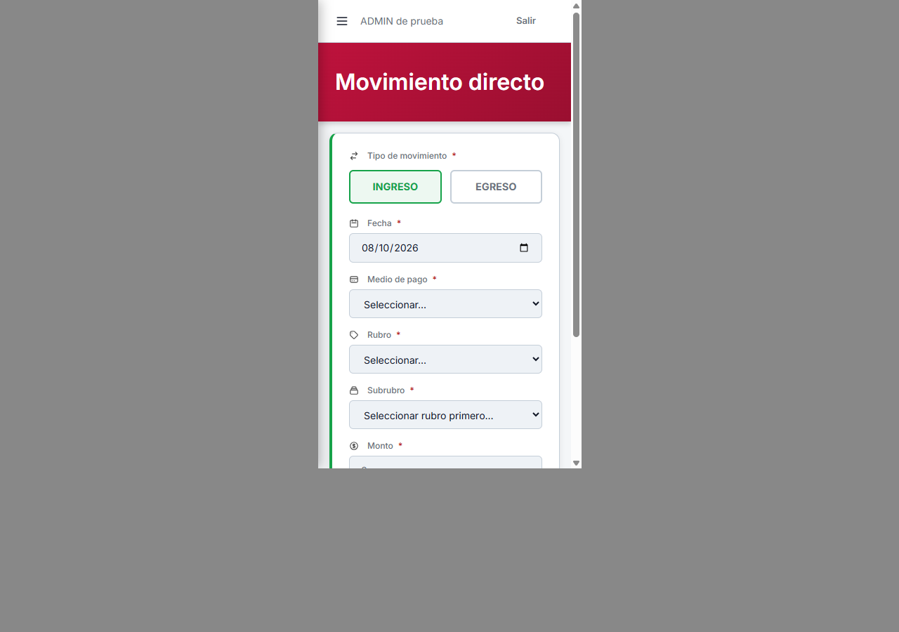
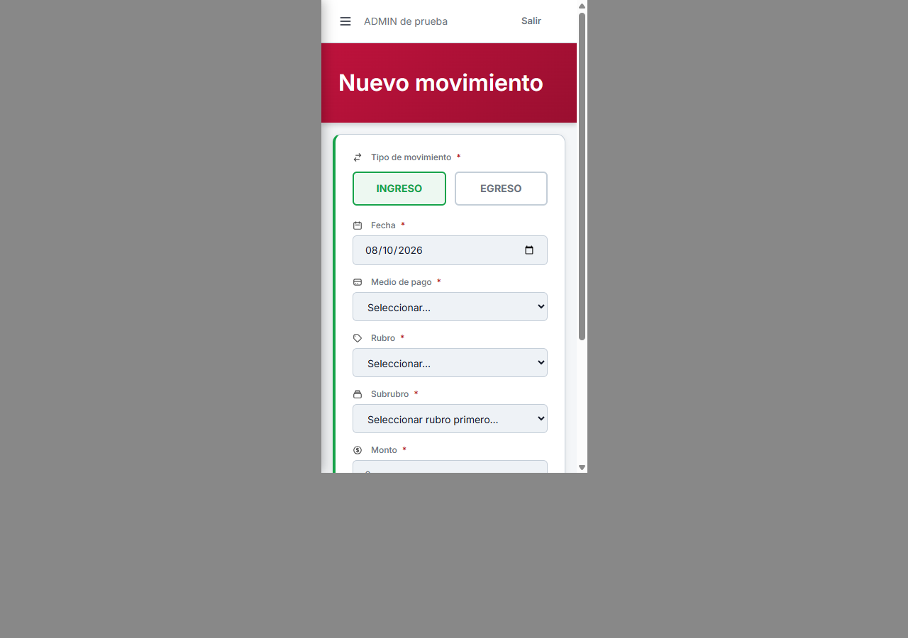
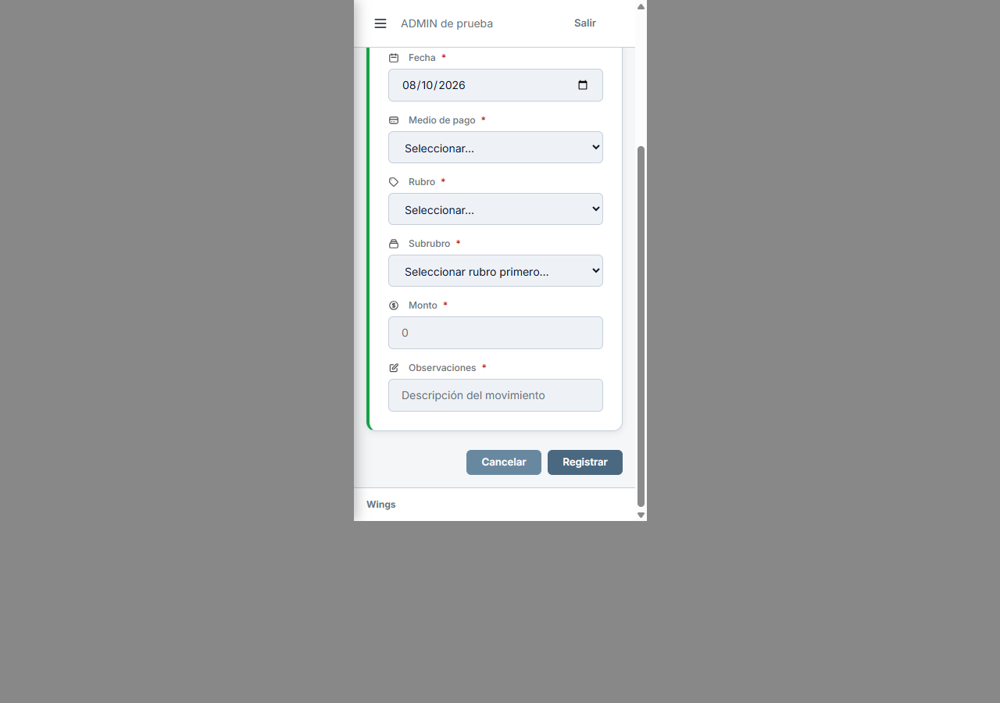
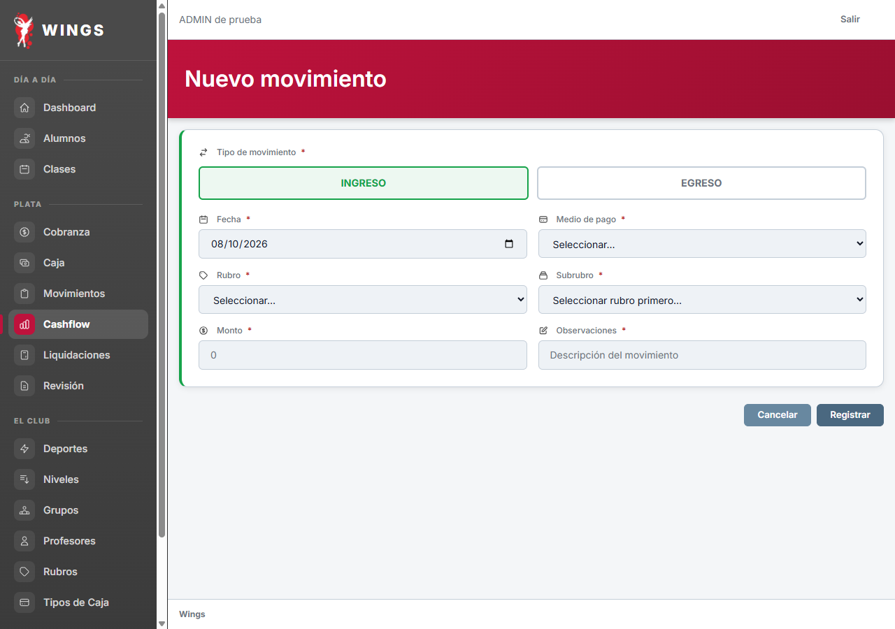

A10 · Pantalla de Nuevo
Propuesta de título: Nuevo movimiento. Se conservan campos, íconos y botones existentes.




Formulario móvil completo
Dos capturas complementarias; sin achicar texto ni teléfono.


Escritorio
Actual
Propuesta

Diseño aprobado por Carlos 08/10; aplicado localmente. Ver resultado aplicado. Capturas de Laravel real con datos ficticios; escritorio 1280×900 y marco 375×667. 08/10/2026. Estas capturas conservan la etapa de propuesta.
Actual: mediciones · Propuesta: mediciones · Control de datos e inventario